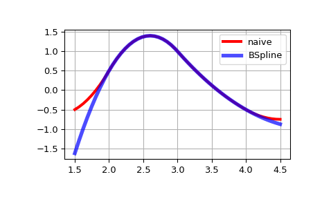

scipy.interpolate.BSpline¶
-
class
scipy.interpolate.BSpline(t, c, k, extrapolate=True, axis=0)[source]¶ Univariate spline in the B-spline basis.
\[S(x) = \sum_{j=0}^{n-1} c_j B_{j, k; t}(x)\]where \(B_{j, k; t}\) are B-spline basis functions of degree k and knots t.
- Parameters
- tndarray, shape (n+k+1,)
knots
- cndarray, shape (>=n, …)
spline coefficients
- kint
B-spline order
- extrapolatebool or ‘periodic’, optional
whether to extrapolate beyond the base interval,
t[k] .. t[n], or to return nans. If True, extrapolates the first and last polynomial pieces of b-spline functions active on the base interval. If ‘periodic’, periodic extrapolation is used. Default is True.- axisint, optional
Interpolation axis. Default is zero.
Notes
B-spline basis elements are defined via
\[ \begin{align}\begin{aligned}B_{i, 0}(x) = 1, \textrm{if $t_i \le x < t_{i+1}$, otherwise $0$,}\\B_{i, k}(x) = \frac{x - t_i}{t_{i+k} - t_i} B_{i, k-1}(x) + \frac{t_{i+k+1} - x}{t_{i+k+1} - t_{i+1}} B_{i+1, k-1}(x)\end{aligned}\end{align} \]Implementation details
At least
k+1coefficients are required for a spline of degree k, so thatn >= k+1. Additional coefficients,c[j]withj > n, are ignored.B-spline basis elements of degree k form a partition of unity on the base interval,
t[k] <= x <= t[n].
References
- Ra9694dbe14e1-1
Tom Lyche and Knut Morken, Spline methods, http://www.uio.no/studier/emner/matnat/ifi/INF-MAT5340/v05/undervisningsmateriale/
- Ra9694dbe14e1-2
Carl de Boor, A practical guide to splines, Springer, 2001.
Examples
Translating the recursive definition of B-splines into Python code, we have:
>>> def B(x, k, i, t): ... if k == 0: ... return 1.0 if t[i] <= x < t[i+1] else 0.0 ... if t[i+k] == t[i]: ... c1 = 0.0 ... else: ... c1 = (x - t[i])/(t[i+k] - t[i]) * B(x, k-1, i, t) ... if t[i+k+1] == t[i+1]: ... c2 = 0.0 ... else: ... c2 = (t[i+k+1] - x)/(t[i+k+1] - t[i+1]) * B(x, k-1, i+1, t) ... return c1 + c2
>>> def bspline(x, t, c, k): ... n = len(t) - k - 1 ... assert (n >= k+1) and (len(c) >= n) ... return sum(c[i] * B(x, k, i, t) for i in range(n))
Note that this is an inefficient (if straightforward) way to evaluate B-splines — this spline class does it in an equivalent, but much more efficient way.
Here we construct a quadratic spline function on the base interval
2 <= x <= 4and compare with the naive way of evaluating the spline:>>> from scipy.interpolate import BSpline >>> k = 2 >>> t = [0, 1, 2, 3, 4, 5, 6] >>> c = [-1, 2, 0, -1] >>> spl = BSpline(t, c, k) >>> spl(2.5) array(1.375) >>> bspline(2.5, t, c, k) 1.375
Note that outside of the base interval results differ. This is because
BSplineextrapolates the first and last polynomial pieces of B-spline functions active on the base interval.>>> import matplotlib.pyplot as plt >>> fig, ax = plt.subplots() >>> xx = np.linspace(1.5, 4.5, 50) >>> ax.plot(xx, [bspline(x, t, c ,k) for x in xx], 'r-', lw=3, label='naive') >>> ax.plot(xx, spl(xx), 'b-', lw=4, alpha=0.7, label='BSpline') >>> ax.grid(True) >>> ax.legend(loc='best') >>> plt.show()
- Attributes
- tndarray
knot vector
- cndarray
spline coefficients
- kint
spline degree
- extrapolatebool
If True, extrapolates the first and last polynomial pieces of b-spline functions active on the base interval.
- axisint
Interpolation axis.
tcktupleEquivalent to
(self.t, self.c, self.k)(read-only).
Methods
__call__(x[, nu, extrapolate])Evaluate a spline function.
basis_element(t[, extrapolate])Return a B-spline basis element
B(x | t[0], ..., t[k+1]).derivative([nu])Return a B-spline representing the derivative.
antiderivative([nu])Return a B-spline representing the antiderivative.
integrate(a, b[, extrapolate])Compute a definite integral of the spline.
construct_fast(t, c, k[, extrapolate, axis])Construct a spline without making checks.